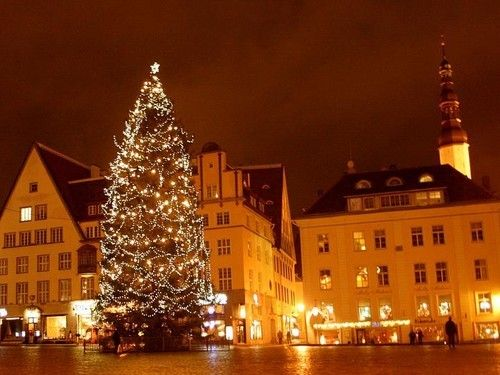
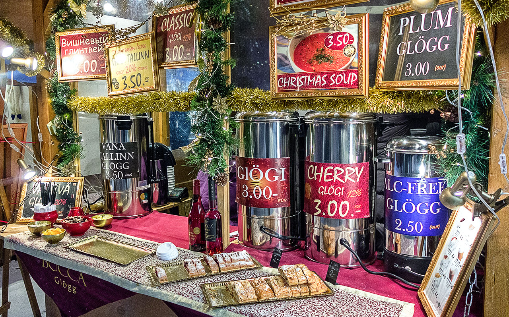
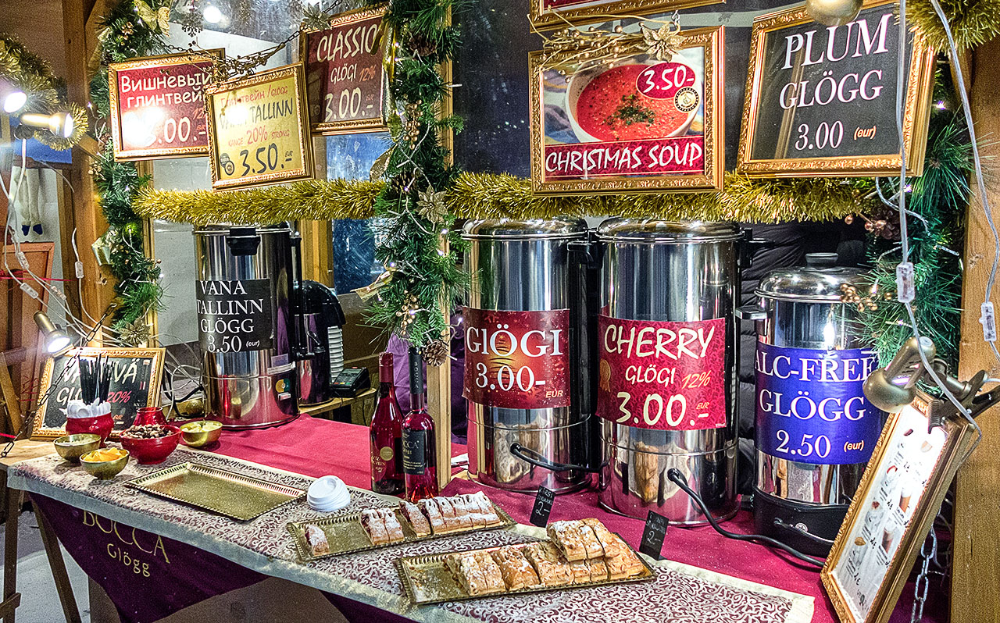
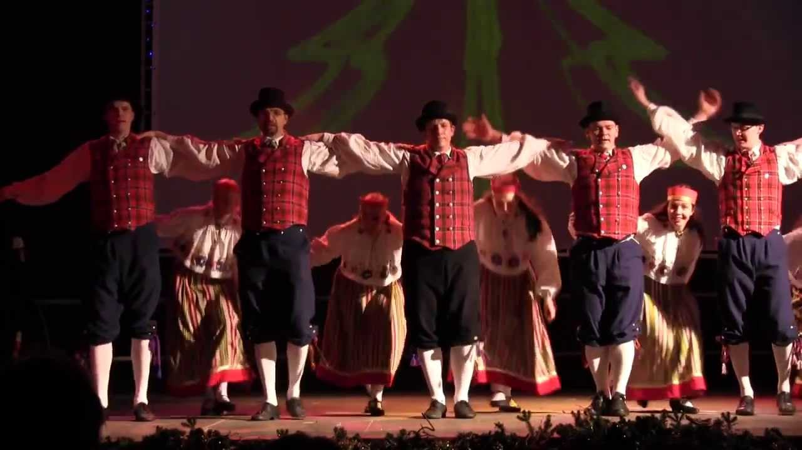
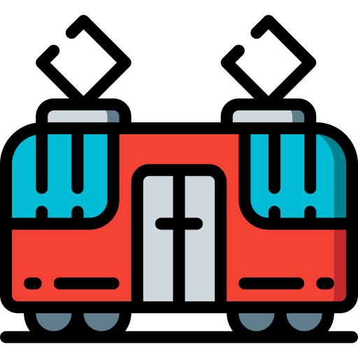
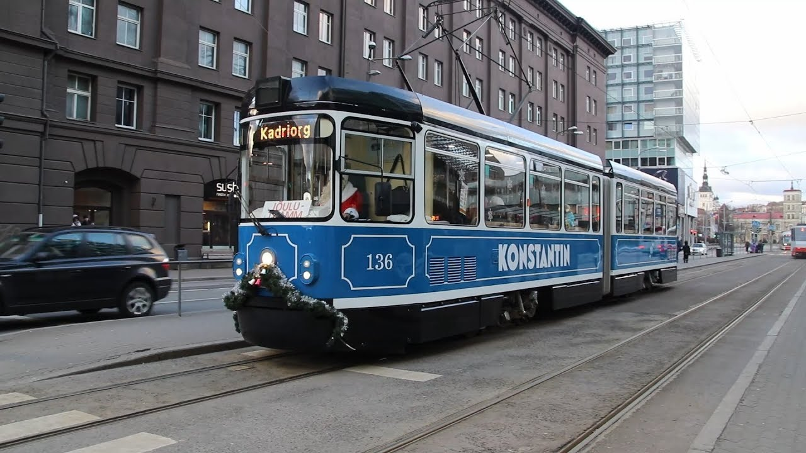

Beskrivning
I enlighet med traditionen kommer Tallinns julmarknad att öppna sina stånd i år för att ge oss glädjen av en sagolik jul. På Raekoja Plats, Rådhustorget, står en pampig gran, julens symbol, och vår stad är stolt över att vara den första platsen i världen där en julgran restes: år 1441, inte mindre!

Under de senaste åren har loppmarknaden som helhet med de vackra medeltida byggnaderna på Raekoja Plats,
blivit en symbol för jul och turism, inte bara i Estland utan också i hela Europa, och anses vara en av de bästa julmarknaderna på kontinenten och i världen.
Den räknas som en av de bästa julmarknaderna på kontinenten och i världen och tar varje år emot nästan en miljon besökare från hela världen.
Barnen underhålls av jultomten, som i sitt lilla trähus ger godis till de barn som är bäst på att recitera verser (sång).
(Att sjunga och recitera verser eller dikter är en tradition i vårt land som vi delar med våra baltiska grannar, letterna och litauerna). I de olika stånden kan du köpa allt från hantverk av hög kvalitet till vintertillbehör som handskar och halsdukar.
vinteraccessoarer som handskar och halsdukar. Och när du har fått nog av att botanisera bland stånden och känner att magen kurrar, kan du stilla din aptit med lite gelégodis.
du kan stilla din aptit med lite pepparkaksgodis eller smaka på läckra estniska rostade rätter. Du kan också prova glögg, en drink
typiska för de baltiska länderna, Skandinavien och Ryssland. Eller den internationella varma chokladen, som alltid smakar fantastiskt.
Julstämningen är närvarande, och förstärkt av ett särskilt kulturprogram. På helgerna kommer olika musikgrupper från Estland och utomlands att spela på marknadens scen och varje söndag under adventstiden tänds ett ljus, samtidigt som pastorerna i de estniska och ryska lutherska kyrkorna samt borgmästaren av staden kommer att hålla välkomsttal till folket på torget. Och 2019 välkomnas med ett ännu mer speciellt program!
Tallinns julmarknad välkomnar alla med öppna armar. God Jul.
Kalender
Marknaden öppnar sina dörrar från 16 november till 7 januari varje dag från 10:00 till 20:00. Varma drycker (glögg) kan avnjutas från söndag till torsdag fram till 22:00 och på fredagar och lördagar till 23:00. Speciellt julprogram: fredagar från 17:00 till 19:00, lördagar och söndagar från 12:00 till 14:00 Sedan den 2 december välkomnar jultomten barn från måndag till söndag från 12:00 till 19:00 kl.
 

Deltagare
Varje helg kommer olika folkgrupper från vårt land och utomlands att delta, redo att ge oss en livlig show.Deltagare är följande:
Fredag 16 de November:Viisuveeretajad (Estland), Carolina (USA)
Lördag 17 de November:Black and White (Irland), Mariliis Jögeva (Estland) Solas (Irland), Tantsusarvikud (Estland)
Söndag 18 de November:Pühalepa (Estland), Dansskola RAPTI (Grekland)
Fredag 23 de November:Leesikad (Estland)
Lördag 24 de November:Juhukse (Estland), Zahira (Estland)
Söndag 25 de November:Cantitores (Finland), Kirmas (Estland)
Fredag 30 de November:Nömme (Estland), Söleke (Estland), Free Flow Studio (Estland)

Lördag 1 de December:Moroshka (Ryssland), Tammed ja Toomed (Estland), Harku Harakad (Estland)
Söndag 2 de December:Kopli (Estland), Tallinns lutherska församlingars körer.
Fredag 7 de December:Vöör ja Ahter (Estland), Dansskola RAPTI (Grekland)
Lördag 8 de December:Kuu (Estland), Panter (Estland), KT Stuudio (Estland)
Söndag 9 de December:Ellerhein (Estland), Ingliskad (Estland)
Fredag 14 de December:Köku (Estland), VAT Stuudio (Estland)
Lördag 15 de December:Tuisuline (Estland), Happy Feet (Nya Zeeland), Jürid-Maarid (Estland)
Söndag 16 de December:Siki (Estland), MYDANCE (Suecia)
Fredag 21 de December:Desiree (Estland)
Lördag 22 de December:Kolgaküla Laneerid (Estland), Free Flow Studio (Estland)
Söndag 23 de December:Löoke (Estland), Modus (Tyskland)
Fredag 28 de December:LTF (USA), Alhambra (USA), Asmarah (Estland), Valeria Nikolajeva (Ryssland)
Lördag 29 de December:Beatrice Nebis (Estland), Aler (Georgien)
Söndag 30 de December:Modus (Tyskland), Lili Adeni (Estland)
Måndag 31 de December:Särskilt nyårsprogram, Nömme Huvikooli (Estland)
Fredag 4 de Januari:Terek (Ryssland), Jagody (Polen), Sakala Laululapsed (Estland)
Lördag 5 de Januari:Pääsuke (Estland), Kodu (Estland), Leigarid (Estland)
Söndag 6 de Januari:Koit (Estland), Juri Zaljubovski (Ryssland), Mustad Kassi (Estland).Stängning av marknaden
Plats
Raekoja Plats ligger i hjärtat av Tallinns historiska centrum. För de turister som vistats utanför centrum eller som bor i utkanten ligger stadsbuss- och spårvagnshållplatserna bara 5 minuters promenad bort. Spårvagnslinje 4 förbinder Raekoja Plats direkt med flygplatsen.
Närmaste busshållplats: Viru (linjerna 21,21B,40,41,48,73)
Närmaste spårvagnshållplats: Viru (linje 3 och 4)
